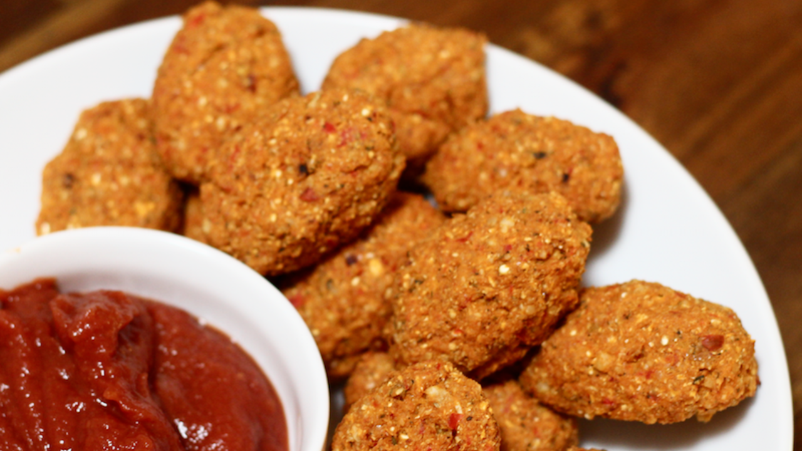

Tamia (Cauliflower Pizza Bites)

Description
Sudanese Tamia is very similar to falafel. They are a deep fried snack made with garbanzo beans and hence packed with proteins. They made exactly in the same way as falafel.
Ingredients
- Chickpeas - 1 cup, dried
- Onion - 1/2 cup, chopped
- Garlic - 2, chopped
- Black pepper powder - 1/2 tsp
- Cayenne - 1/4 tsp
- Salt - 1.5 tsp
- Dill - 3 plus 1 tbsp
- Flour - 1 tbsp
- Water - 1-2 tbsp, pus for soaking
- Oil - 2 cups
- Sesame seeds - 1 tbsp, toasted
Steps
- Soak the garbanzo beans overnight or for 8 hours.
- Wash and drain the water.
- Add the soaked garbanzos, salt, garlic, 2 tbsp dill, salt, 1 or 2 tbsp water, onion, cayenne, and black pepper powder to the food processor.
- Grind to a coarse mixture similar to falafel.
- Transfer to a bowl and add 1 tbsp dill, toasted sesame, and flour and mix thoroughly.
- Take about 1.5 to 2 tbsp of this mixture, roll into a ball and slightly flatten it.
- Heat oil in a heavy-bottomed pan on a medium flame.
- Fry the flattened tamia deep golden brown and Serve immediately.